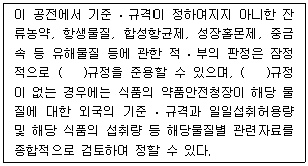
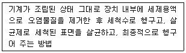
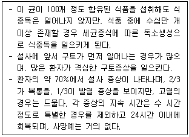
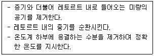
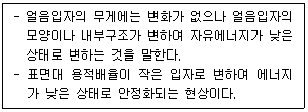

수산제조기사 (2007-05-13 기출문제)
1과목: 식품위생학
1. 식품에서 생성되는 Acrylamide에 의한 위험을 낮추기 위한 방법으로 잘못된 것은?
- 감자는 8℃ 이상의 음지에서 보관하고 냉장고에 보관하지 않는다.
- 튀김의 온도는 160℃ 이상으로 하고, 오븐의 경우는 200℃ 이상으로 조절한다.
- 빵이나 시리얼 등의 곡류 제품은 갈색으로 변하지 않도록 조리하고, 조리 후 갈색으로 변한 부분은 제거한다.
- 가정에서 생감자를 튀길 경우 물과 식초의 혼합물(1:1 비율)에 15분간 침지한다.
(정답률: 알수없음)

2. 발색제에 대한 설명으로 틀린 것은?
- 염지시 사용되는 식품첨가물이다.
- 발색뿐만 아니라 육제품의 보존성이나 특유의 향미를 부여하는 효과를 나타낸다.
- 보툴리누스균 등의 일반 세균의 생육에는 영향을 미치지 않고 곰팡이의 생육을 저해한다.
- 강한 산화력을 나타내어 메트미오글로빈혈증을 일으키는 등 급성 독성을 갖고 있다.
(정답률: 알수없음)
3. 콜레라에 대한 설명으로 틀린 것은?
- 주증상은 심한 설사이다.
- 내열성은 약하지만 일반 소독제에 대해서는 저항력이 강한 편이다.
- 외래 전염병으로 검역 대상전염병이다.
- 비브리오속에 속하는 세균이다.
(정답률: 알수없음)
4. 다음 전염병 중 바이러스에 의해 전염되지 않는 것은?
- 콜레라
- 폴리오
- 인플루엔자
- 전염성 간염
(정답률: 알수없음)
5. 식품공전상 기구 및 용기 ㆍ 포장의 기준 ㆍ 규격에 의한 재질별 규격에서 금속제 도금용 주석의 기준은?
- 5.0% 이하
- 7.0% 이하
- 9.0% 이하
- 10.0% 이하
(정답률: 알수없음)
6. '잔류성유기오염물질에 대한 협약' 에 관련된 설명으로 틀린 것은?
- POPs조약 ㆍ 스톡홀름협약이라고 한다.
- 다이옥신을 비롯한 12종에 대한 제조 ㆍ 사용 ㆍ 수출입 등을 금지 또는 제한, 규제하는 내용을 담고 있다.
- 잔류성 유기오염물질은 환경 중에서 분해되기 어렵고 체내에 축적되기 쉽다.
- 인간의 건강과 환경을 보호할 목적으로 WHO가 주도하여 미국, 일본 등 100여개의 국가가 비준하였다.
(정답률: 알수없음)
7. 아래는 식품공전의 총칙이다. ( ）안에 공통으로 알맞은 것은?

- 국제식품규격위원회
- 국제보건기구
- 미국식품의약품안전청
- 한국식품공업협회
(정답률: 알수없음)
8. 대장균지수(Coli index)란?
- 검수 10ml 중 대장균군의 수
- 검수 100ml 중 대장균군의 수
- 대장균군을 검출할 수 있는 최소검수량
- 대장균군을 검출할 수 있는 최소검수량의 역수
(정답률: 알수없음)
9. 식품첨가물의 저정절차에서 첨가물 사용의 기술적 필요성 및 정당성에 해당하지 않는 것은?
- 식품의 품질을 보존하거나 안정성을 향상
- 식품의 영양성분을 유지
- 특정 목적으로 소비자를 위하여 제조하는 식품에 필요한 원료 또는 성분을 공급
- 식품의 제조 ㆍ 가공 과정 중 결함 있는 원재료를 은폐
(정답률: 알수없음)
10. 방사선조사식품에 대한 설명으로 틀린 것은?
- 식품을 일정시간 동안 이온화에너지에 노출시킨다.
- 발어억제, 숙도지연, 보존성향상, 기생충 및 해충사멸 등의 효과가 있다.
- 조사 후 건조 또는 탈기 과정이 필요하며 잔류 독성이 있다.
- 방서선량의 단위는 Gy, kGy이며, 1Gy는 1J/kg과 같다.
(정답률: 알수없음)
11. 유전자 재조합식품의 안전성 평가를 위한 일반적인 조사에 해당하지 않는 것은?
- 건강에의 직접적 영향(독성)
- 유전자 재조합에 의해 만들어진 영야 효과
- 유전자 도입 전 식품의 안전성
- 알레르기 반응을 일으키는 경향
(정답률: 알수없음)
12. 다음과 같은 식품 기계장치의 세정 방법은?

- 분해 세정법
- CIP 법
- HACCP 법
- Clean room 법
(정답률: 알수없음)
13. 우리나라의 집단식중독 발생현황에 대한 설명으로 맞는 것은?
- 클로스트리디움 보툴리눔보다 살모넬라에 의한 환자수가 많다.
- 원인물질별 건수는 황색포도상구균 등의 세균보다 노로바이러스 등의 바이러스에 의한 것이 많다.
- 섭취장소별 환자수는 집단급식소보다 가정집이 많다.
- 1년 중 6월에 환자수가 가장 적다.
(정답률: 알수없음)
14. 알레르기 형태의 식중독에 대한 설명으로 틀린 것은?
- 원인식품은 꽁치, 고등어 등 붉은살 생선이다.
- 발종 시간은 잠복기가 느려 보통 2-3일 뒤에 증상이 나타난다.
- 증상은 발적, 안면홍조, 입 또는 눈의 점막충혈 등이다.
- 단백질분해물질인 히스타민 등 유해아민에 위한 것이다.
(정답률: 알수없음)
15. 식품의 안전성과 수분활성도(Aw)에 관한 설명으로 틀린 것은?
- 비효소적 갈변 : 다분자수분층보다 낮은 Aw에서는 발생하기 어렵다.
- 효소 활성 : Aw가 높을 때가 낮을 때보다 활발하다.
- 미생물의 성장 : 보통 세균 증식에 필요한 Aw는 0.91 정도이다.
- 유지의 산화반응 : Aw가 0.5-0.7이면 반응이 일어나지 않는다.
(정답률: 알수없음)
16. 유구조충에 대한 설명으로 틀린 것은?
- 돼지고기를 숙주로 돼지 소장에서 부화한 후 돼지 신체 조직으로 옮겨진다.
- 머리에 갈고리가 있어 갈고리촌충이라고도 한다.
- 66℃로 가열하면 완전히 사멸된다.
- 성충이 기생하면 복부 불쾌감, 설사, 구토, 식욕항진 등을 일으킨다.
(정답률: 알수없음)
17. 식품등의 표시기준상 합성감미료에 해당하지 않는 식품첨가물은?
- 삭카린나트륨
- 아세설팜칼륨
- 글리실리진산이나트륨
- 이산화티타늄
(정답률: 알수없음)
18. 아래와 같은 특성을 가지는 식중독균은?

- 리스테리아 모노사이토네제스
- 클로스크리디움 보툴리눔
- 병원성 대장균
- 황색포도상구균
(정답률: 알수없음)
19. 캠필로박터 식중독에 대한 설명으로 맞는 것은?
- 독소형식중독을 일으키는데, 아주 미량을 섭취하더라도 식중독에 걸릴 수 있다.
- 산소가 완전히 없는 혐기적인 조건에서만 증식 ㆍ 발육할 수 있다.
- 대기상태와 같이 산소가 충분한 호기적 조건에서 최적으로 증식한다.
- 살모넬라와 장염비브리오 등 식중독균이 증식 가능한 실온(25℃)에서는 거의 증식할 수 없다.
(정답률: 알수없음)
20. 식품위생법규상 식품취급자의 위생에 대한 설명으로 틀린 것은?
- 식품을 가공하는데 직접 종사하는 자는 매년 1회 장티푸스, 폐결핵, 전염성 피부질환 등의 건강진단을 받아야 한다.
- 전염병예방법에 의한 제 1군, 제 2군, 제 3군 전염병은 모두 영업에 종사하지 못하는 질병이다.
- 피부병 기타 화농성질환은 영업에 종사하지 못하는 질병이다.
- 결핵에 걸린 자가 비전염성인 경우는 영업에 종사할 수 있다.
(정답률: 알수없음)
2과목: 수산화학
21. 구멍갈파래, 갈파래 및 꼬시래기의 단백질은 일반적으로 어느 계절에 가장 많은가?
- 봄
- 여름
- 가을
- 겨울
(정답률: 알수없음)
22. 어류의 선도판정 방법 중 K값의 변화에 가장 큰 영향을 미치는 것은?
- IMP 분해속도
- ATP 분해속도
- AMP 생성속도
- ADP 생성속도
(정답률: 알수없음)
23. 어육의 ATP분해 경로는?
- ATP → ADP → adenosine → inosine → hypoxanthine
- ATP → ADP → AMP → adenosine → inosine → hypoxanthine
- ATP → ADP → AMP → IMP → adenosine → hypoxanthine
- ATP → AMP → ADP → adenosine → inosine → hypoxanthine
(정답률: 알수없음)
24. 어묵의 망상구조형성과 관계 있는 것은?
- stroma
- actomyosin
- gelatin
- myogen
(정답률: 알수없음)
25. 담수어 냄새 성분과 가장 거리가 먼 물질은?
- trimethylamine
- amino valeral
- aldehyde
- piperidine
(정답률: 알수없음)
26. 어교의 원료 중 가장 좋은 품질을 나타내는 것은?
- 두부아교
- 비늘아교
- 뼈아교
- 껍질아교
(정답률: 알수없음)
27. 건조식품에서 단분자층 수분의 주요 역할은?
- 미생물의 발육억제
- 산화방지
- 흡수성 감소
- 미량금속의 촉매작용 촉진
(정답률: 알수없음)
28. 어육을 냉동할 때 냉각속도가 빠를수록 어육내의 수분이 결빙하는 상태는?
- 빙결정은 크고 수는 많다.
- 빙결정은 작고 수는 많다.
- 빙결정은 크고 수는 적다.
- 빙결정은 작고 수는 적다.
(정답률: 알수없음)
29. 인지질의 구성성분이 아닌 것은?
- choline
- inositol
- serine
- cerebrine
(정답률: 알수없음)
30. 천연 단백질이 변성할 때 나타나는 현상이 아닌 것은?
- 용해도가 감소한다.
- 등전점이 산성방향으로 이동한다.
- 구성기의 반응성이 증가한다.
- 생물학적인 활성이 감소한다.
(정답률: 알수없음)
31. 강장동물에 존재하는 유독성분으로 수용성이며 중추신경계에 작용하여 사지마비를 일으키는 것은?
- holotoxin
- palytoxin
- nereistoxin
- asterosaponin
(정답률: 알수없음)
32. 엑기스분 중에 다량 존재하여 문어 중 0.52%, 물오징어 중 0.35% 정도 함유(고기 중 함량)되어 있는 것은?
- mannitol
- tyrosine
- glutamic acid
- taurine
(정답률: 알수없음)
33. 단위의 분수나 배수를 나타내기 위하여 사용되는 보조단위 피코(pico)의 의미는?
- 10-6
- 10-9
- 10-12
- 10-15
(정답률: 알수없음)
34. 다음 중 어패류의 저장 초기 pH 저하에 가장 크게 영향을 미치는 것은?
- 아미노산
- 글리코겐
- 지방산
- 트리글리세라이드
(정답률: 알수없음)
35. 어유 중의 지방산 불포화정도를 나타내는 지표로 이용될 수 있는 것은?
- 산값
- 과산화물값
- 요오드값
- 카보닐값
(정답률: 알수없음)
36. 다음 중 미역 등의 갈조류에 많이 함유되어 있는 점질이 높은 수용성 황산다당류는?
- Alginic acid
- Agarose
- Fucoidan
- Fructan
(정답률: 알수없음)
37. 다음 중 어육의 신선도를 유지하기 위해서 연장해야 하는 사후변화 단계는?
- 사후경직
- 자가소화
- 해경
- 부패
(정답률: 알수없음)
38. 게, 새우류의 흑변을 방지하는 방법으로 잘못된 것은?
- 아황산수소나트륨을 처리한다.
- pH를 4 이하로 유지한다.
- 가열로 효소를 불활성화 시킨다.
- 금속이온을 첨가한다.
(정답률: 알수없음)
39. 송어나 연어 육의 변색과 가장 관련이 있는 색소는?
- Astaxanthin
- Zeaxanthin
- Salmoxanthin
- Canthaxanthin
(정답률: 알수없음)
40. 다음 중 guanidino 화합물이 아닌 것은?
- anserine
- creatine
- creatinine
- arginine
(정답률: 알수없음)
3과목: 수산가공학
41. 프레온계 냉매로 쇼케이스(showcase)에 많이 사용되는 것은?
- R-11(CCl3F)
- R-12(CCl2F2)
- R-13(CClF3)
- R-22(CHClF2)
(정답률: 알수없음)
42. 식품을 포장하는데 내용식품의 품질보존이나 작업의 안전성의 관점에서 용기 및 재료가 구비해야 할 조건 중 물리적 구비조건이 아닌 것은?
- 기체 차단성
- 내충격성
- 내염성
- 내압성
(정답률: 알수없음)
43. 미른멸치 가공에 대한 설명 중 틀린 것은?
- 선도가 좋은 것을 사용한다.
- 끓는 염수(5-6%)에 넣어 10-15분 정도 삶는다.
- BHA를 자숙용수에 대하여 0.01% 정도 넣는다.
- 자숙 후 표면에 뜬 유지는 제거하지 않고 멸치와 함께 건져 올린다.
(정답률: 알수없음)
44. 훈연실의 온도를 단백질이 응고하지 않도록 유지하면서 장기간에 걸쳐 훈연하는 것은?
- 온훈법
- 냉훈법
- 열훈법
- 전훈법
(정답률: 알수없음)
45. 고등어육을 체축에 대하여 직각 방향으로 절단하여 본 조직배열 순서로서 옳은 것은?
- 표피 - 진피 - 색소층 - 피하지방층
- 진피 - 색소층 - 피하지방층 - 근육층
- 표피 - 피하지방층 - 색소층 - 근육층
- 진피 - 피하지방층 - 색소층 - 근육층
(정답률: 알수없음)
46. 한천의 일반적인 성질이 아닌 것은?
- 한천은 agarose 및 agaropectin 의 혼합물이다.
- 한천의 가장 큰 특징은 응고성이다.
- 99.9%의 수분을 유지할 수 있는 보수성이 있다.
- 한천의 sol 의 응고온도와 gel 의 융해온도는 75~80℃ 정도이다.
(정답률: 알수없음)
47. 지방이 많은 어류는 어떤 염장법을 사용하는 것이 가장 적합한가?
- 물간법
- 마른간법
- 특수염장법
- 급속염장법
(정답률: 알수없음)
48. 다음 중 일반적인 중간수분식품의 Aw 범위는?
- 0.⑤ ~ 0.01
- 0.10 ~ 0.25
- 0.30 ~ 0.55
- 0.60 ~ 0.85
(정답률: 알수없음)
49. 다음 중 명골(明骨, boilde-dried cartilage)의 설명으로 옳은 것은?
- 상어지느러미를 자숙하여 표피와 연골을 제거하고 근사만으로 한 제품
- 큰가리비, 국자가리비, 키조개 등의 패주를 자숙 건조 한 제품
- 상어류, 가오리, 개복치 등의 두부, 턱뼈, 아가미뼈 및 지노러미 부착부 등의 연골을 자숙 건조한 제품
- 마른새우를 염수에 넣어 새우가 부상할 때까지 자숙한 제품
(정답률: 알수없음)
50. 캐비아(caviar) 란 무엇을 염장한 것인가?
- 청어알
- 연어알
- 명태알
- 용상어알
(정답률: 알수없음)
51. 다음 훈연성분 중 체내에서 대사활성화되어 DNA와 결합함으로써 생성되는 발암성 물질은?
- Phenol
- Acetic acid
- Propionic acid
- 3,4-Benzopyrene
(정답률: 알수없음)
52. 비교적 선도가 좋지 못한 어류를 염장할 때 어체처리 방법으로 가장 적합한 것은?
- 턱에서 복강까지 갈라 내장 제거
- 가슴에서 복강까지 갈라 내장 제거
- 가슴에서 꼬리까지 갈라 내장 제거
- 턱에서부터 꼬리까지 갈라 내장 제거
(정답률: 알수없음)
53. 내열성이 우수하고 기계적 강도가 커서 케이싱이나 레토르트파우치용 적층필름의 외층에 주로 쓰이는 플라스틱필름은?
- PVDC
- Polyethylene
- Vinyl resin
- Polypropylene
(정답률: 알수없음)
54. 어묵의 망상구조 형성에 관한 설명 중 틀린 것은?
- Glutamyl-lysine 공유결합은 Ca 의존형 T Gase에 의해 형성된다.
- S-S 공유결합은 저온 자연응고(setting)시보다는 본가열시에 다량 형성된다.
- Glutamyl-lysine 공유결합은 40℃ 이하의 자연응고(setting)시 주로 형성된다.
- S-S 결합은 두 개의 cystine 아미노산 잔기가 산화되어 형성된다.
(정답률: 알수없음)
55. 키틴과 키토산에 대한 설명으로 틀린 것은?
- 키틴은 N-아세틸글루코사민이 β-1,4 결합된 다당류이다.
- 키틴은 갑각류 껍질, 버섯의 세포벽 등에 단백질과 복합체로 존재한다.
- 키토산은 글루코사민이 β-1,4 결합된 다당류이다.
- 키틴과 키노산은 물에 녹는 수용성이다.
(정답률: 알수없음)
56. 다음 중 어분 제조시 자숙의 목적에 해당하지 않는 것은?
- 부착세균 사멸
- 원료 효소 불활성화
- 세포막 연화
- 단백질 가수분해
(정답률: 알수없음)
57. 연제품의 탄력 강도는 연육의 pH에 따라 크게 영향을 받는데, 탄력이 가장 강한 pH 범위는?
- pH 5.0 이하
- pH 5.0~6.0
- pH 6.0~6.5
- pH 6.5~7.5
(정답률: 알수없음)
58. 연제품의 원료로서 탄력이 강한 겔 형성력을 가지는 어종은?
- 조기
- 정어리
- 고등어
- 방어
(정답률: 알수없음)
59. 등푸른 생선에 백탁화 현상이 야기되어 문제가 되는 저온저장법은?
- 쇄빙법
- 냉각해수법
- 빙온법
- 부분동결법
(정답률: 알수없음)
60. 동결식품을 냉수 중에 수초동안 담그었다가 건져 올리는 방법은?
- 팬닝(Panning)
- 그레이징(Glazing)
- 탈팬(Depanning)
- 침지식(immersion)
(정답률: 알수없음)
4과목: 통조림제조학
61. buckling 현상에 대한 설명으로 틀린 것은?
- 살균종료 후 retort 내의 증기를 급격히 배출할 때 일어나기 쉬운 변형이다.
- 관이 내부와 외부의 압력 차이가 관의 탄성한계를 넘어설 때 생기는 돌출변형이다.
- 소형관일수록 buckling을 일으키기 쉽다.
- buckling의 정도가 심하면 밀봉부가 느슨하게 되어 변패가 발생할 수 있다.
(정답률: 알수없음)
62. 어떤 세균의 spore 가 120℃에서 D값=10분, z값=10℃ 일 때, 130℃에서 이 세균 spore의 D값은?
- 3분
- 2분
- 1분
- 30초
(정답률: 알수없음)
63. 121.1℃에서 z값이 10℃인 경우 가열치사시간을 나타내는 기호는?
- F0값
- Z0값
- A값
- X값
(정답률: 알수없음)
64. 밀봉부 외부의 치수 측정만으로는 알 수 없는 것은?
- 관높이(H)
- 밀봉두께(T)
- 밀봉폭(W)
- Body hook 길이(BH)
(정답률: 알수없음)
65. 다음 중 Flat-sour 에 관계되는 주요 미생물은?
- Bacillus polymyxa
- Bacillus stearothermophilus
- Bacillus macerans
- Bacillus subtilis
(정답률: 알수없음)
66. 굴통조림의 적변과 관계가 없는 물질은?
- chlorophyll
- lecithin
- peridinine
- protein
(정답률: 알수없음)
67. 레토르트를 사용한 가열살균에서 come-up time 이란?
- 증기를 도입한 후 공기제거를 시작할 때까지의 시간
- 증기를 도입한 후 공기의 제거가 끝날 때까지의 시간
- 증기를 도입한 후 공기를 제거하고 살균온도에 도달할 때까지의 시간
- 증기를 도입한 후 공기를 제거하고 살균이 끝 날 때까지의 시간
(정답률: 알수없음)
68. 다음 중 알루미늄관의 장점이 아닌 것은?
- 금속냄새가 거의 나지 않는다.
- 흑변을 야기하지 않는다.
- 식염 함유 식품에 의해 부식되지 않는다.
- 0℃에서도 기계적 성질의 변화가 거의 없다.
(정답률: 알수없음)
69. sealing compuond 는 어디에 도포하는가?
- 플랜지(flange)부
- 랩(lap)부
- 사이드 심(side seam)부
- 컬(curl)부
(정답률: 알수없음)
70. 꽁치통조림 제조시 원료 중의 수용성 단백질을 추출하기 위해 20~40분 정도로 염수 처리할 때 쓰이는 소금물의 농도로 가장 적합한 것은?
- 18~20%
- 21~25%
- 17~15%
- 10~14%
(정답률: 알수없음)
71. 일상 관리 중의 원통형 통조림에 적합한 밀봉 훅 중합률(OL%, percentage of overlap hook)은?
- 40% 이상
- 45% 이상
- 50% 이상
- 55% 이상
(정답률: 알수없음)
72. 타발압연관(drawn and ironed can, DI관)에 대한 설명으로 틀린 것은?
- Two piece can 이다.
- 관동의 이음매가 없다.
- 관동과 밑바닥의 두께가 같다.
- 관 재료가 절감된다.
(정답률: 알수없음)
73. 통조림 냉각수를 염소처리하는 주된 목적은?
- 냉각수 중의 세균수의 감소 또는 살균
- 관표면의 부식방지
- 냉각수의 장기보존
- 열전도 효과 증대로 냉각효과 커짐
(정답률: 알수없음)
74. 레토르트(retort)에서 가열매체로 기압수증기를 사용하는 이유로 적합하지 않은 것은?
- 기화잠열이 작다.
- 온도조절이 쉽다.
- 수증기를 발생시키기가 쉽다.
- 관의 변형을 방지한다.
(정답률: 알수없음)
75. 관의 뚜껑과 밑바닥은 거의 편평하나, 한쪽 면이 약간 부풀어 있어 손끝으로 누르면 소리를 내며 원상태로 되돌아가는 용기 이상 현상은?
- flipper
- springer
- flat sour
- swell
(정답률: 알수없음)
76. 아래의 기능을 하는 장치는?

- Bleeder
- Steam header
- Vent
- Gate valve
(정답률: 알수없음)
77. 2중 밀봉(double seam)하는데 랩(lap, side seam)부는 양철판이 몇 겹으로 겹치는가?
- 8겹
- 7겹
- 6겹
- 5겹
(정답률: 알수없음)
78. High retort pouch 식품에 적합한 살균온도와 시간은?
- 100~110℃, 2~10분
- 110~120℃, 2~5분
- 120~130℃, 2~5분
- 130℃ 이상, 2~10분
(정답률: 알수없음)
79. 다음 중 이중밀봉은 양호하나 살균이 불량한 통조림에서 검출될 수 있는 편성혐기성 세균은?
- Pseudomonas
- Vibrio
- Achromobacter
- Clostridium
(정답률: 알수없음)
80. 커퍼 훅(cover hook)의 주름도에 대한 설명으로 틀린 것은?
- 밀봉의 강도를 나타낸다.
- 시밍 롤(seaming roll)의 압력이 약하면 주름이 많아진다.
- 대형관일수록 주름이 적어진다.
- 주름도가 클수록 밀봉이 잘 된 것이다.
(정답률: 알수없음)
5과목: 냉동냉장학
81. 반만액식 증발기에 대한 설명으로 틀린 것은?
- 냉매액은 상부에서 공급한다.
- 전열효과는 건식보다 양호하다.
- 증발기 내의 냉매액이 어느 정도 남아 있도록 설계된 것이다.
- 상부에서는 냉매가스만 압축기에 보낸다.
(정답률: 알수없음)
82. 동일 냉매 및 압축기에서 압축비와 체적효율의 관계가 바르게 설명된 것은?
- 압축비가 크면 체적효율은 높아진다.
- 압축비와 체적효율은 항상 일정하다.
- 압축비와 체적효율은 상관관계가 없다.
- 압축비가 크면 체적효율은 낮아진다.
(정답률: 알수없음)
83. 다음 중 2차 냉매를 이용한 냉동법은?
- 송풍식 동결법
- 가스식 동결법
- 부유식 동결법
- 참지식 동결법
(정답률: 알수없음)
84. 아래에서 설명하는 얼음의 재결정은?

- 동질량 재결정(iso-mass recrystallizstion)
- 이동성 재결정(migratory recrystallizstion)
- 부착성 재결정(accretive recrystallizstion)
- 돌변성 재결정(irruptive recrystallizstion)
(정답률: 알수없음)
85. 원통형 증발기(shell and tube type evaporator)의 주된 사용 용도는?
- 화학공업용의 브라인 냉각시 증발기로 사용
- 냉장고 내의 공기 냉각시 증발기로 사용
- 냉장실 및 동결실의 냉각봉으로 사용
- 식품공업에서 기름의 냉각시에 증발기로 사용
(정답률: 알수없음)
86. 냉동식품 내의 얼음결정의 생성과 성장에 관한 설명 중 틀린 것은?
- 결정핵의 생성과 결정의 성장으로 나눌 수 있다.
- 결정핵은 어는점에서는 생성되지 않고 용액이 어는점 이하로 과냉각되어야 한다.
- 과냉각도가 적을수록 결정핵의 생성속도가 증가한다.
- 급속동결된 식품은 작고 많은 결정을 포함하고 있다.
(정답률: 알수없음)
87. freezer burn 현상을 방지할 수 있는 방법으로 적합하지 않은 것은?
- 높은 RH%에서 저장한다.
- 용액에 침지한다.
- 수분 증발을 막는 포장을 한다.
- 식품 표면을 순간적으로 가열처리 한다.
(정답률: 알수없음)
88. 어패류 냉동품에 빙의(glaze)를 입히는 주된 목적은?
- 드립(drip) 유출 방지
- 수분증발과 산화 방지
- 단백질 변성 방지
- 효소분해작용 억제
(정답률: 알수없음)
89. 어류의 냉동저장 중 지방의 변화에 대한 설명으로 틀린 것은?
- 산화작용과 효소의 작용에 의하여 발생한다.
- glyceride 가 가수분해되어 유리지방산이 생성된다.
- lipoxygenase 는 포화지방산의 산화를 촉진한다.
- 냉동어류의 지방산화는 저온에서도 계속되나, 온도가 낮을수록 반응속도는 느려진다.
(정답률: 알수없음)
90. 팽창밸브에 대한 설명으로 틀린 것은?
- 수동 팽창밸브 전후의 압력차가 커지면 유량은 증가한다.
- 모세관은 주로 소형냉동장치에 사용된다.
- 정압 팽창밸브에서는 부하가 변동하면 증발기 내의 압력도 변동한다.
- 플럿(float) 팽창저압밸브는 만액식 증발기에 사용된다.
(정답률: 알수없음)
91. 냉동장치에서 응축기의 주된 기능은?
- 흡입압력을 증가시킨다.
- 배출압력을 증가시킨다.
- 강제로 고압증기에서 열을 버리게 하여 액체로 응축시킨다.
- 냉매를 압축기로부터 수액기로 송달시킨다.
(정답률: 알수없음)
92. 동결식품의 탈팬(depanning) 방법과 조건으로 가장 적합한 것은?
- 상온에서 물에 1~2분간 넣었다가 꺼내어 밑을 두드려 탈팬한다.
- 30℃의 물에 넣어 해동한 뒤 밑을 두드려 탈팬한다.
- 상온에서 그대로 방치한 후 탈팬한다.
- 급히 뜨거운 물(60℃ 이상)에 2~3분간 담근 후 탈팬한다.
(정답률: 알수없음)
93. 냉동에서 승화열을 이용하는 것은?
- 암모니아
- 드라이아이스
- 프레온
- 브롬
(정답률: 알수없음)
94. 두께가 10cm인 식품의 초온이 0℃일 때 이 식품의 온도 중심점을 -15℃까지 저하시키는데 2시간이 소요되었다. 이 식품의 동결속도는?
- 1.5cm/h
- 2.5cm/h
- 3.5cm/h
- 5cm/h
(정답률: 알수없음)
95. 정지공기 동결법에 대한 설명으로 틀린 것은?
- 동결장치가 간단하다.
- 냉각관 없이 동결실의 정지한 공기 중에서 동결한다.
- 모양에 대한 제한이 적으며 대량처리가 가능하다.
- 완만동결된다.
(정답률: 알수없음)
96. 암모니아 표준냉동사이클에서 10RT의 냉동능력을 얻기 위하여 필요한 냉매 순환량은 약 얼마인가? (단, 냉동효과는 269kcal/kg 이다.)
- 103kg/h
- 123kg/h
- 143kg/h
- 163kg/h
(정답률: 알수없음)
97. 다음 중 냉각탑과 응축기를 합친 형식의 응축기는?
- 수냉식 응축기
- 공랭식 응축기
- 증발식 응축기
- 2통로식 응축기
(정답률: 알수없음)
98. 저단측과 고단측의 냉동사이클이 독립적으로 운전되는 냉동기는?
- 1단압축냉동기
- 2단압축냉동기
- 2원압축냉동기
- 다효압축냉동기
(정답률: 알수없음)
99. 냉동장치에서 기름 분리기의 설치 위치로서 가장 적당한 곳은?
- 압축기와 응축기 사이
- 응축기와 팽창밸브 사이
- 팽창밸브와 증발기 사이
- 증발기와 압축기 사이
(정답률: 알수없음)
100. 다음 어류 중에서 sponge화가 가장 잘 일어나는 것은?
- 전갱이
- 방어
- 고등어
- 대구
(정답률: 알수없음)
튀김의 온도를 160℃ 이상으로 하고, 오븐의 경우는 200℃ 이상으로 조절하는 이유는 Acrylamide의 생성을 최소화하기 위해서이다. Acrylamide는 고온에서 탄수화물과 아미노산이 반응하여 생성되기 때문에, 높은 온도에서 조리하면 생성량이 줄어들게 된다.
반면, 빵이나 시리얼 등의 곡류 제품은 갈색으로 변하지 않도록 조리하고, 조리 후 갈색으로 변한 부분을 제거하는 것은 Acrylamide와는 관련이 없는 다른 이유 때문이다. 갈색으로 변하는 것은 Maillard 반응에 의한 것으로, 이는 고온에서 탄수화물과 아미노산이 반응하여 생성되는 것이다. 하지만 Maillard 반응은 Acrylamide와는 다른 화학 반응이므로, 갈색으로 변하는 것이 Acrylamide의 생성과 직접적인 연관이 있는 것은 아니다.